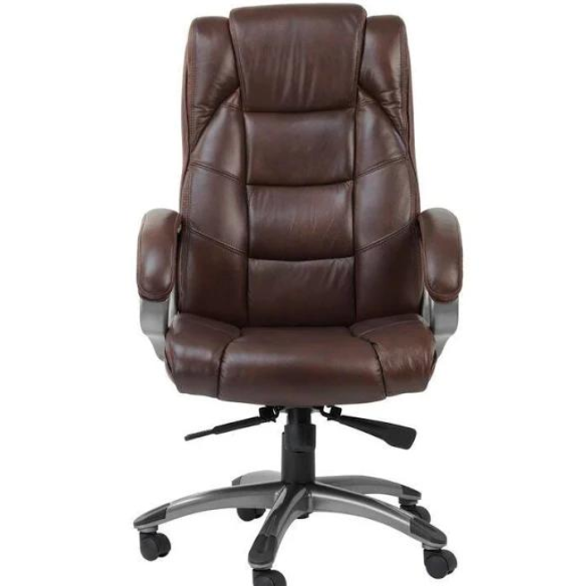

Unser Team
Herr Müller
Geschäftsführer & Zeitphilosoph
Mit über 20 Jahren Erfahrung in der alternativen Zeitmessung revolutioniert Herr Müller die Uhrenindustrie. Seine Spezialisierung auf gravitationsbasierte Chronometrie und sein Doktortitel in angewandter Sandkorn-Physik machen ihn zum führenden Experten für nicht-digitale Zeiterfassung.

Frau Schmidt
Chefdesignerin & Sonnenstand-Expertin
Frau Schmidt verbindet traditionelle Steinmetzkunst mit präziser astronomischer Berechnung. Ihre Sonnenuhren sind auf die Millisekunde genau kalibriert und funktionieren selbst bei bewölktem Himmel durch ihre patentierte Wolken-Durchdringungs-Technologie.

Herr Weber
Technischer Leiter & Kerzen-Ingenieur
Als zertifizierter Pyrotechniker und Wachs-Spezialist entwickelt Herr Weber die präzisesten Kerzenuhren der Welt. Seine innovativen Docht-Algorithmen sorgen für eine Genauigkeit von ±30 Sekunden über 24 Stunden - ein Weltrekord in der kontrollierten Verbrennung.